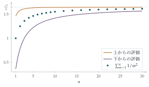

STEP III 2018、第7問
先に進む前に問題を読んでおこう。問題は STEP Support Programme の問題データベースにある： step.maths.org/questions/18-s3-q7
導入
1650年、ピエトロ・メンゴリ（Pietro Mengoli）は単純な問いを立てた。 \[1 + \frac14 + \frac19 + \frac1{16} + \frac1{25} + \cdots\, ?\] の値はいくつか。各項は十分速く小さくなるので、この和は収束（converge）する（第 2.3 節 で、和が高々 \(2\) であることを示した）。しかし、その値を求められる者はいなかった。ベルヌーイ兄弟（Bernoulli brothers）も挑んだが失敗し、ヤコブ・ベルヌーイ（Jacob Bernoulli）は公に助けを求めたほどである。この問題は、ベルヌーイ家の故郷の都市にちなんでバーゼル問題（Basel problem）と呼ばれるようになった。
1734年、若きオイラー（Leonhard Euler）がこれを解き、その答えによって一躍名を上げた。和は \(\pi^2/6\) である。円に関する数である \(\pi\) が、平方の逆数の和に現れるのはいったいなぜだろうか。この問題は、Aレベル（A level、英国の大学入学資格試験）の範囲を超えるものを何も使わずに、完全で厳密な証明を与える。使うのは、ド・モアブルの定理（De Moivre’s theorem）、多項式（polynomial）の根（roots）の和、そしてはさみうち（squeeze）である。
取りかかる前に
細部に入る前に、全体の方針を見ておく価値がある。
小問 (i) では、数 \(\cot^2\bigl(\frac{m\pi}{2n+1}\bigr)\) を根にもつ多項式をつくる。
小問 (ii) では、それらの根を個別には知らないまま、係数（coefficients）を用いて足し合わせる。
小問 (iii) では、小さい \(\theta\) に対して \(\cot\theta \approx 1/\theta\) が成り立つことを用いて、\(\cot^2\) の値の和を \(1/m^2\) の値の和に置き換え、はさみうちにする。
多項式 \(a_n x^n + a_{n-1} x^{n-1} + \cdots + a_0\) が根 \(r_1, \ldots, r_n\) をもつとき、\(r_1 + \cdots + r_n\) を係数で表すとどうなるか。
答えは \(-a_{n-1}/a_n\) である。この事実が小問 (ii) の原動力となる。
順を追って解く
段階 1 ド・モアブルの定理
\(\cot\theta + \mathrm{i}\) を一つの分数で表せ。分子について何に気づくか。
\(\cot\theta + \mathrm{i} = \dfrac{\cos\theta + \mathrm{i}\sin\theta}{\sin\theta}\) であり、同様に \(\cot\theta - \mathrm{i} = \dfrac{\cos\theta - \mathrm{i}\sin\theta}{\sin\theta}\) である。ド・モアブルの定理より、 \[(\cot\theta \pm \mathrm{i})^{2n+1} = \frac{\cos(2n+1)\theta \pm \mathrm{i}\sin(2n+1)\theta}{\sin^{2n+1}\theta}.\] 差をとると余弦は打ち消し合い、正弦は2倍になる。これを \(2\mathrm{i}\) で割ると \[\frac{\sin(2n+1)\theta}{\sin^{2n+1}\theta}. \qed\] を得る。
段階 2 多項式
今度は左辺を二項定理（binomial theorem）で展開する。\(c = \cot\theta\)、\(N = 2n + 1\) とおく。
\((c + \mathrm{i})^N - (c - \mathrm{i})^N\) において、二つの二項展開のどの項が打ち消し合い、どの項が2倍になるか。
\(\mathrm{i}^j\) を含む項は、一つ目の展開では \(+\) の符号で、二つ目の展開では \((-1)^j\) を伴って現れる。したがって、\(j\) が偶数の項は打ち消し合い、\(j\) が奇数の項は2倍になる。 \[(c + \mathrm{i})^N - (c - \mathrm{i})^N = 2 \sum_{j \text{ 奇数}} \binom{N}{j} c^{N-j}\, \mathrm{i}^j.\] \(j = 2k + 1\) とすると、\(\mathrm{i}^j = \mathrm{i}\,(-1)^k\) かつ \(c^{N-j} = c^{2n-2k} = (c^2)^{n-k}\) である。\(2\mathrm{i}\) で割ると \[\frac{\sin(2n+1)\theta}{\sin^{2n+1}\theta} = \binom{2n+1}{1} x^n - \binom{2n+1}{3} x^{n-1} + \cdots + (-1)^n,\] となる。ただし \(x = \cot^2\theta\) である。
どのような \(\theta\) に対して左辺は \(0\) になるか。これを用いて、多項式の相異なる \(n\) 個の根を求めよ。
左辺が \(0\) になるのは、\(\sin(2n+1)\theta = 0\) かつ \(\sin\theta \neq 0\) のときであり、たとえば \(m = 1, 2, \ldots, n\) に対して \(\theta = \frac{m\pi}{2n+1}\) のときである。これらの角はすべて \(0\) と \(\frac\pi2\) の間（両端を含まない）にあり、そこで \(\cot\) は正かつ狭義単調減少であるから、\(n\) 個の値 \(\cot^2\bigl(\frac{m\pi}{2n+1}\bigr)\) はすべて異なる。\(n\) 次の多項式の根は高々 \(n\) 個であるから、これらが根のすべてである。■
段階 3 根を足し合わせる
根の和は、係数を用いて \(-(\text{係数 } x^{n-1}) / (\text{係数 } x^n)\) と表される。 \[\sum_{m=1}^{n} \cot^2\left( \frac{m\pi}{2n+1} \right) = \frac{\binom{2n+1}{3}}{\binom{2n+1}{1}} = \frac{(2n+1)(2n)(2n-1)}{6\,(2n+1)} = \frac{n(2n-1)}{3}. \qed\] \(n = 1\) で確かめると、\(\cot^2(\pi/3) = \frac13\) であり、\(\frac{1 \times 1}{3} = \frac13\) である。
段階 4 はさみうち
\(0 < \sin\theta < \theta < \tan\theta\) から逆数をとり（不等号の向きが逆になる）、2乗すると \[\cot^2\theta < \frac{1}{\theta^2} < \frac{1}{\sin^2\theta} = 1 + \cot^2\theta.\]
\(\theta = \frac{m\pi}{2n+1}\) とおき、\(m = 1, \ldots, n\) について足し合わせよ。外側の二つの和はどうなるか。真ん中の和は \(\sum 1/m^2\) とどう関係するか。
真ん中の和は \(\displaystyle\sum_{m=1}^{n} \frac{(2n+1)^2}{m^2 \pi^2}\) である。小問 (ii) より左の和は \(\frac{n(2n-1)}{3}\) であり、右の和は \(n + \frac{n(2n-1)}{3} = \frac{2n(n+1)}{3}\) である。全体に \(\frac{\pi^2}{(2n+1)^2}\) を掛けると \[\frac{\pi^2}{3} \cdot \frac{n(2n-1)}{(2n+1)^2} \;<\; \sum_{m=1}^{n} \frac{1}{m^2} \;<\; \frac{\pi^2}{3} \cdot \frac{2n(n+1)}{(2n+1)^2}.\] \(n \to \infty\) のとき、\(\frac{n(2n-1)}{(2n+1)^2}\) と \(\frac{2n(n+1)}{(2n+1)^2}\) はともに \(\frac24 = \frac12\) に収束する（分子と分母を \(n^2\) で割ればよい）。よって両側の評価はともに \(\frac{\pi^2}{6}\) に収束し、その間に挟まれた部分和（partial sums）も \(\frac{\pi^2}{6}\) に収束しなければならない（図 2.4.1）。■

振り返り
係数から情報を得る。 根 \(\cot^2(m\pi/(2n+1))\) をより簡単な形で求めることは一度もなかったが、それらの和は正確に求められた。
近似してから挟む。 \(\cot\theta\) は \(1/\theta\) に近似的に等しいにすぎないが、その誤差は両方向の厳密な不等式によって制御されていた。
有限から無限へ。 最後の段階までは、すべて有限和を扱っていた。無限和が現れたのは、不等式において \(n \to \infty\) としたときだけであり、これが無限を扱う安全な方法である。
背後にある数学
1734年のオイラー自身の議論は、現代の基準では厳密ではなかったが、目を見張るものであった。根 \(\pm a, \pm b, \pm c, \ldots\) をもち、\(0\) における値が \(1\) である多項式は、\((1 - x^2/a^2)(1 - x^2/b^2)\cdots\) と因数分解される。関数 \(\frac{\sin x}{x}\) は \(0\) における値が \(1\) で、根 \(\pm\pi, \pm 2\pi, \pm 3\pi, \ldots\) をもつ。そこでオイラーは、これを「無限次の多項式」とみなして \[\frac{\sin x}{x} = \left(1 - \frac{x^2}{\pi^2}\right)\left(1 - \frac{x^2}{4\pi^2}\right)\left(1 - \frac{x^2}{9\pi^2}\right)\cdots.\] と書いた。右辺の \(x^2\) の係数は \(-\frac{1}{\pi^2}\bigl(1 + \frac14 + \frac19 + \cdots\bigr)\) であり、一方マクローリン級数（Maclaurin series）\(\frac{\sin x}{x} = 1 - \frac{x^2}{6} + \cdots\) からは \(-\frac16\) である。両者を比べると \(\pi^2/6\) が得られる。私たちの STEP の証明は、同じ考え方の有限で厳密な版である。すなわち、根が \(\pi\) の倍数と結びついた多項式と、その2番目の係数である。
平方の逆数を越えて
オイラーはさらに \(\sum 1/m^4 = \pi^4/90\)、\(\sum 1/m^6 = \pi^6/945\) を見いだし、一般に \(\sum 1/m^{2k}\) は \(\pi^{2k}\) の有理数倍であって、ベルヌーイ数（Bernoulli numbers）が関わることを示した。奇数乗の場合は事情がまったく異なる。第 2.3 節 で見たように、\(\sum 1/m^3\) の公式は誰も知らない。これらの和はリーマンゼータ関数（Riemann zeta function）の値 \(\zeta(2), \zeta(4), \ldots\) であり、この関数の複素数の引数に対するふるまいが素数の分布を支配している（第 1.2 節）。
再び出会う場所
大学では、\(\zeta(2) = \pi^2/6\) の証明に少なくともあと三つ出会うだろう。フーリエ級数（Fourier series）（関数を正弦と余弦の和として表すもの）による証明、二重積分（double integral）による証明、そして複素解析（complex analysis）による証明である。また、この数は確率にも現れる。無作為に選んだ二つの整数が公約数をもたない（互いに素である）確率は \(6/\pi^2 \approx 0.61\) である。（素数 \(p\) が両方を割り切る確率は \(1/p^2\) であるから、どの素数も両方を割り切らない確率は \(\prod_p (1 - 1/p^2)\) であり、オイラーはこの積が \(1/\zeta(2)\) に等しいことを示した。）確率の極限に \(\pi\) が現れる別の例は、第 12.23 節 の主題である。
思考のスキル
極限を求めるには、その量を、同じ極限をもつ二つのより簡単な式で挟み込め。
そして、扱いにくい数の和（あるいは積）が必要なときは、それらを根にもつ多項式を探してみよう。係数が、それらの対称な組合せ（symmetric functions）をただで与えてくれる。
次の一歩
1992年版。 STEP III 1992、第8問 に挑戦せよ。この節のものと似た多項式を用いて、正接の2乗の和や余割の2乗の和を正確に求める問題である。（ヒント：根が \(r_i\) である多項式がわかっているとき、根が \(1/r_i\) である多項式は何か。）
奇数の平方。 \(\sum 1/m^2 = \pi^2/6\) から \(1 + \frac19 + \frac1{25} + \frac1{49} + \cdots = \frac{\pi^2}{8}\) を導け。
4乗。 発展 \(\sum r_i^2 = (\sum r_i)^2 - 2\sum_{i<j} r_i r_j\) と多項式の係数を用いて \(\sum_{m=1}^{n} \cot^4\bigl(\frac{m\pi}{2n+1}\bigr)\) を求め、はさみうちの議論を応用して \(\sum 1/m^4 = \pi^4/90\) を証明せよ。
どれくらい速いか。 小問 (iii) の下からの評価を用いて、\(\frac{\pi^2}{6} - \sum_{m=1}^{n} \frac{1}{m^2} < \frac{\pi^2}{4n}\) を示せ。部分和が \(\pi^2/6\) との差 \(0.001\) 以内に入るには、この評価によればどれだけ大きな \(n\) をとれば十分か。実際の誤差は \(1/n\) に近いが、それと比較せよ。
さらに学ぶために
William Dunham, Euler: The Master of Us All (Mathematical Association of America)。『オイラー：われら皆の師』。第 3 章では、バーゼル問題の物語が数学的内容も含めて余すところなく語られている。
Aigner & Ziegler, Proofs from THE BOOK、第 9 章「Three times \(\pi^2/6\)」（\(\pi^2/6\) を三通りで）。この節の証明も収められている。
Paul Nahin, Dr. Euler’s Fabulous Formula (Princeton University Press)。『オイラー博士の素敵な数式』。複素数、フーリエ級数、そしてこのような和を扱っている。